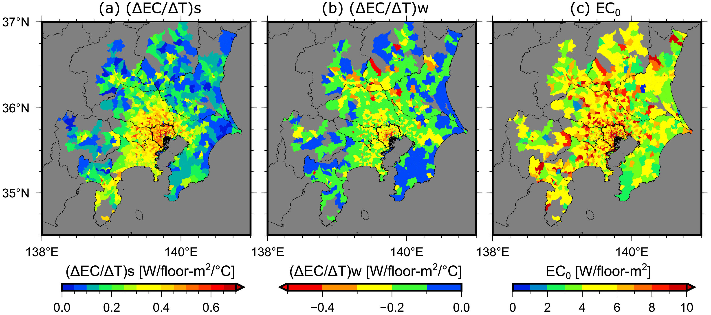
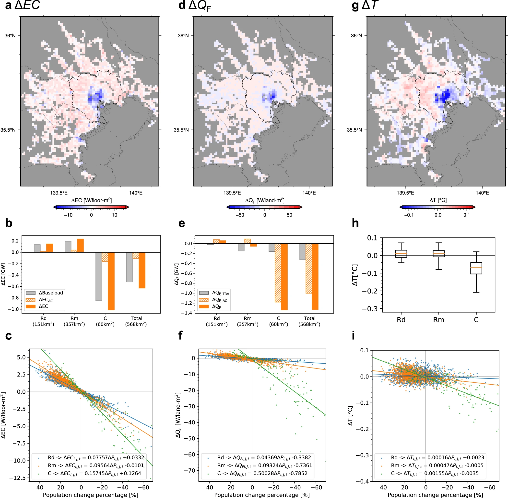
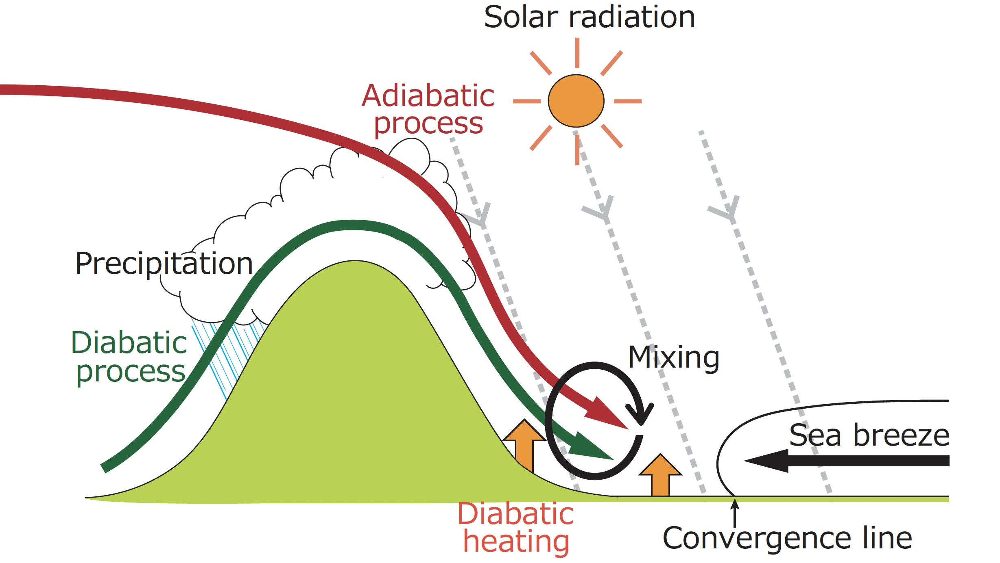

NEWS
-
14 June 2025Launches a new personal website (GitHub Pages)
-
1 April 2025New position: Senior Researcher at the Center for Climate Change Adaptation (CCCA), National Institute for Environmental Studies (NIES), Tsukuba, Japan.
-
31 March 2025Retired: National Institute of Advanced Industrial Science and Technology (AIST), Tsukuba, Japan.
Research Interests
-
Urban climate and building energy modeling for global cities

-
Urban climate, energy, climate change and interaction between human behaviour in cities

-
Climate change adaptation and mitigation in urban areas

-
Mechanism of heat wave and urban heat island in urban areas

Selected published papers
-
Takane, Y., Kikegawa. K. Nakajima, and H. Kusaka, 2024: SLUCM+BEM (v1.0): a simple parameterisation for dynamic anthropogenic heat and electricity consumption in WRF-Urban (v4.3.2). Geoscientific Model Development, 17, 8639-8664. doi: 10.5194/gmd-17-8639-2024
-
Takane, Y., K. Nakajima, K. Yamaguchi, and Y. Kikegawa, 2023: Decarbonisation technologies can halve the nonlinear increase in electricity demand in densely populated areas due to climate change. Sustainable Cities and Society, 99, 104966. doi: 10.1016/j.scs.2023.104966
 -
Takane, Y., K. Nakajima, and Y. Kikegawa, 2022: Urban climate changes during the COVID-19 pandemic: Integration of urban-building-energy model with social big data. NPJ Climate and Atmospheric Science, 5, 44. doi: 10.1038/s41612-022-00268-0
 -
Takane, Y., Y. Kikegawa, M. Hara, and C. S. B. Grimmond, 2019: Urban warming and future air-conditioning use in an Asian megacity: Importance of positive feedback. NPJ Climate and Atmospheric Science, 2, 39. doi: 10.1038/s41612-019-0096-2
-
Takane, Y., H. Kusaka, and H. Kondo, 2015: Investigation of a recent extreme high-temperature event in the Tokyo metropolitan area using numerical simulations: the potential role of a 'hybrid' foehn wind. Quarterly Journal of the Royal Meteorological Society, 141, 1857–1869. doi: 10.1002/qj.2490

About Me

Center for Climate Change Adaptation (CCCA)
National Institute for Environmental Studies (NIES)
Senior Researcher
Yuya Takane
-
Educations
-
Mar 2008
BSc, Department of Biosphere-Geosphere Science, Okayama University of Science, Okayama, Japan (Supervisor: Prof. Yukitaka Ohashi)
-
Mar 2010
MSc in Science, Graduate School of Life and Environmental Sciences, University of Tsukuba. Tsukuba, Japan (Supervisor: Prof. Hiroyuki Kusaka)
-
Mar 2013
PhD in Science, Graduate School of Life and Environmental Sciences, University of Tsukuba, Tsukuba, Japan (Supervisor: Prof. Hiroyuki Kusaka)
-
-
Research Experiences
-
Apr 2013-Sep 2017
Researcher (tenure-track), Environmental Management Research Institute, National Institute of Advanced Industrial Science and Technology (AIST), Tsukuba, Ibaraki, Japan
-
Feb 2017-Jan 2019
Visiting Researcher (Japan Society for the Promotion of Science Overseas Research Fellow), Department of Meteorology, University of Reading, Reading, England, United Kingdom
-
Oct 2017-Mar 2025
Senior Researcher (tenure), Environmental Management Research Institute, National Institute of Advanced Industrial Science and Technology (AIST), Tsukuba, Ibaraki, Japan
-
Oct 2023-present
Visiting Associate Professor, Graduate School of Science and Technology, Tokyo University of Science
-
Apr 2025-present
Senior Researcher (tenure), Center for Climate Change Adaptation (CCCA), National Institute for Environmental Studies (NIES), Tsukuba, Ibaraki, Japan
-
-
Awards
-
May 2025
Shono Award 2025, Meteorological Society of Japan
-
Sep 2021
Best Paper and Presentation Award, Heat Island Institute International
-
Jun 2014
The 6th International Symposium on Computational Wind Engineering (CWE2014) Poster Award
・Takane, Y., H. Kusaka, and H. Kondo, 2014: Mechanisms of foehn wind and a recent record-breaking high temperature in the Tokyo metropolitan area using the WRF model.
-
Jul 2013
Best Paper and Presentation Award, Heat Island Institute International.
-
Jul 2008
Best Paper and Presentation Award, Heat Island Institute International.
-
-
Academic Affiliations
Research Performance
Contact
Access
16-2 Onogawa, Tsukuba, Ibaraki, Japan 305-8506
Center for Climate Change Adaptation (CCCA), National Institute for Environmental Studies (NIES)
takane.yuya at nies.go.jp